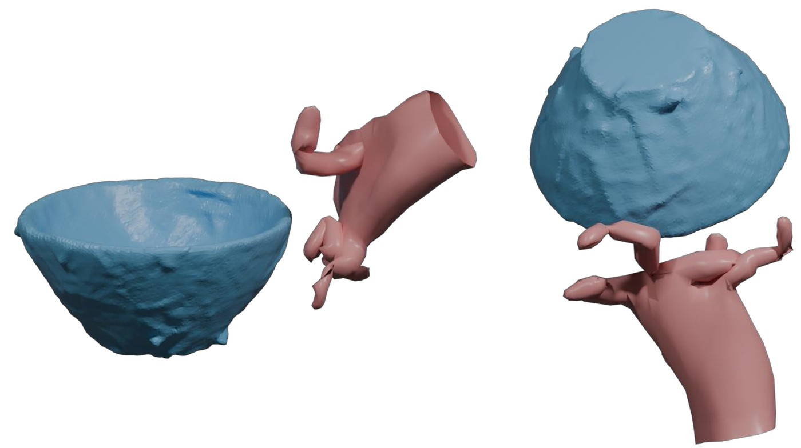
Noisy pose
We propose HaNDF, object-conditional neural distance fields as data-driven priors for modeling plausible hand–object configurations in the product manifold of hand articulations. While recent unconditional generative priors showed success in modeling human pose, hands are versatile articulated bodies often found in interaction with other objects. This makes it crucial to develop a generative prior which can model the plausible hand poses conditioned on the object under interaction. To this end, HaNDF proposes a geometry-aware, object-conditioned neural distance field, representing the plausible articulations in the zero-level set of a conditional field. We leverage tools from Riemannian geometry to (i) represent plausible hands in the zero level-set of an object-induced neural field, and (ii) project a given pose onto this field. Using HaNDF, we can also optimize for a plausible condition, determining the object under interaction. Our extensive evaluations demonstrate that HaNDF provides a flexible and powerful prior for hand–object interaction, suitable for applications such as pose refinement, reconstruction under occlusion, and physically plausible manipulation synthesis.
Each hand pose is a point on a product manifold of unit quaternions, MH = ℍ1K, with one quaternion per joint. The distance field is learned with respect to the geodesic distance on this manifold.
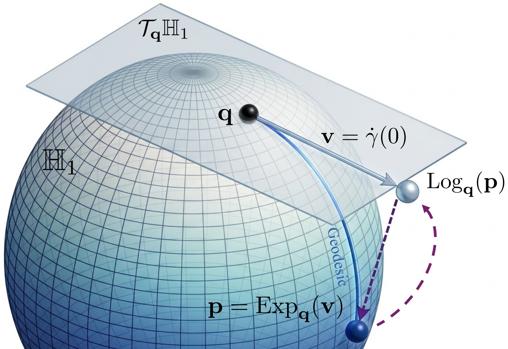
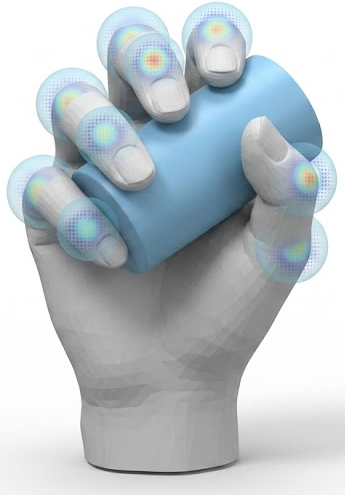
Left: the unit-quaternion sphere ℍ1, the tangent space at q, the geodesic from q to p, and the maps Expq and Logq. Right: per-joint rotation distributions of one grasp.
fΦ(θ | z) is a network that maps a pose θ and an object latent z to the geodesic distance from θ to the nearest plausible pose for that object. The plausible poses form the zero level-set S(z), which changes with z.
Projection onto the zero level-set is Riemannian gradient descent on the field. Each step moves along the normalized Riemannian gradient by a length proportional to the predicted distance, and the exponential map returns the result to the manifold, so every iterate is itself a hand pose.
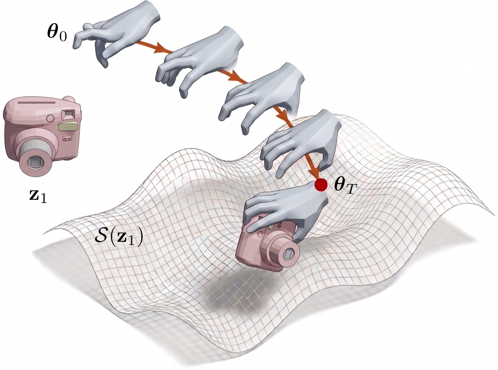
Denoising, completion, generation and image-based recovery share the objective below: a task-specific data term plus the squared field value as a prior, minimized over the hand pose.
Noisy poses are projected onto S(z) with the update above. The slider shows the pose after t = 0, 100, 300 and 1000 steps; the ground truth is on the right.

Noisy pose
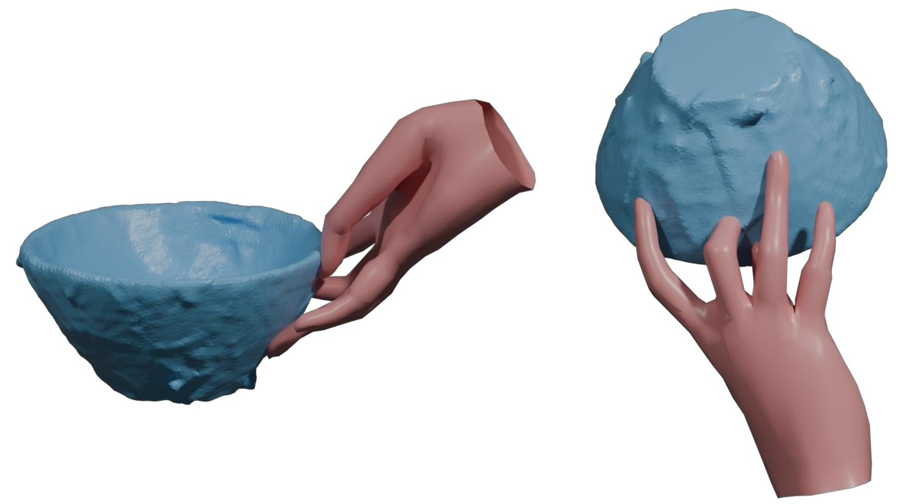
Ground truth
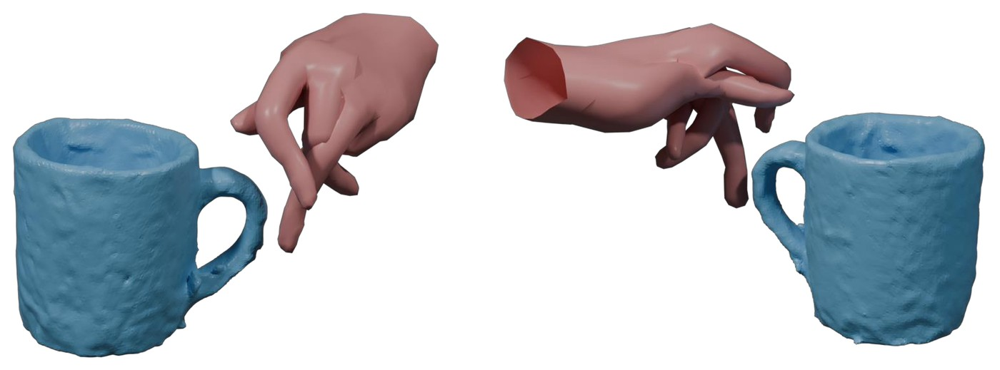
Noisy pose
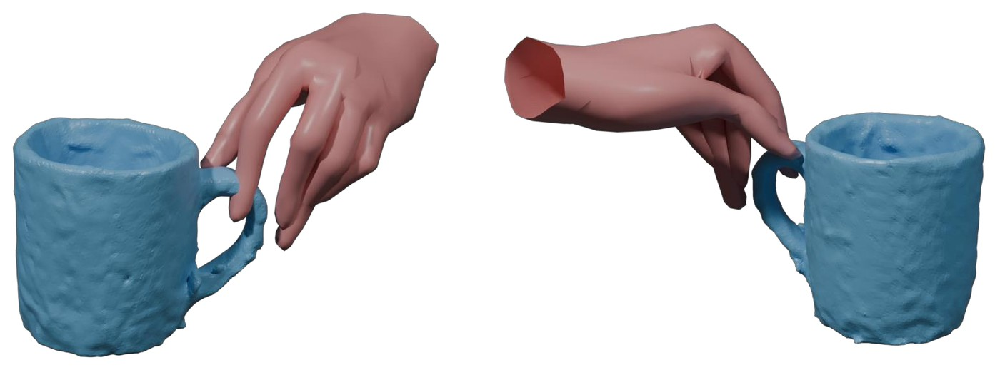
Ground truth
Denoising with different priors. Columns: ground truth, HMP, H-NRDF (NRDF trained on hand poses), HaNDF.
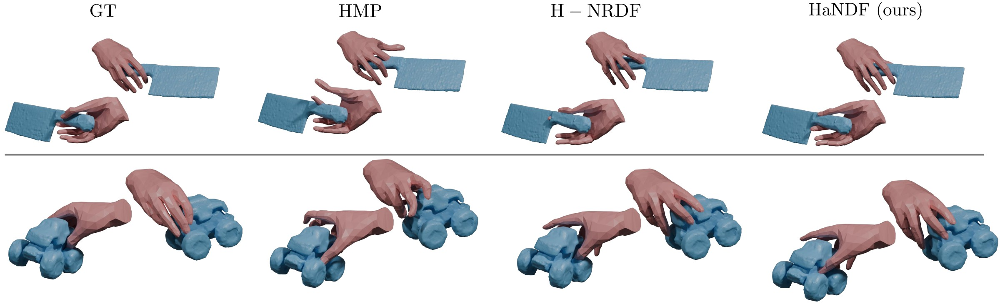
HaNDF is added as the hand prior to EasyHOI and AlignSDF; evaluation on HOI4D, OakInk and DexYCB. For hand-focused comparison, the object ground truth is provided during inference. MPVPE and MPJPE: mean per-vertex and per-joint position error of the hand. I.V.: hand–object intersection volume. Lower is better.
| HOI4D | OakInk | DexYCB | |||||||
|---|---|---|---|---|---|---|---|---|---|
| Method | MPVPE ↓ | MPJPE ↓ | I.V. ↓ | MPVPE ↓ | MPJPE ↓ | I.V. ↓ | MPVPE ↓ | MPJPE ↓ | I.V. ↓ |
| iHOI | 19.42 | 20.12 | 41.44 | 14.75 | 15.17 | 1.66 | 29.85 | 30.73 | 1.26 |
| EasyHOI | 16.64 | 17.06 | 13.28 | 13.17 | 13.48 | 0.93 | 29.64 | 30.08 | 2.61 |
| EasyHOI + HaNDF | 13.98 | 14.33 | 11.40 | 12.85 | 13.12 | 0.89 | 28.31 | 28.78 | 2.43 |
| AlignSDF | 10.40 | 10.60 | 5.39 | 10.34 | 10.50 | 0.82 | 16.82 | 17.19 | 0.99 |
| AlignSDF + HaNDF | 10.22 | 10.43 | 4.39 | 9.98 | 10.17 | 0.87 | 16.59 | 16.97 | 0.98 |
Left of the handle: the baseline. Right: the baseline with HaNDF. The circles are the annotations of the paper figure: lacking contact, penetration, implausible rotation.
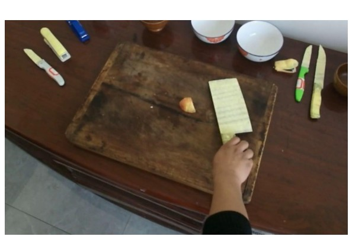
Input
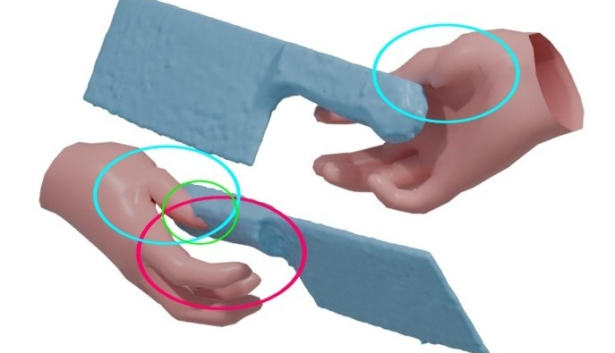
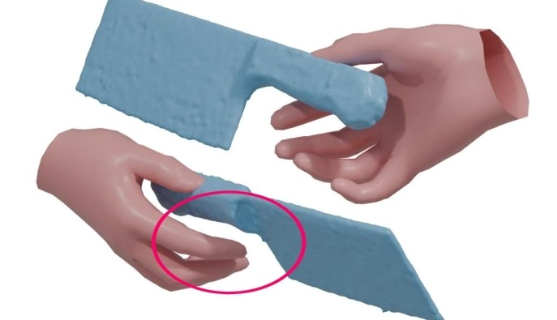
EasyHOI + HaNDF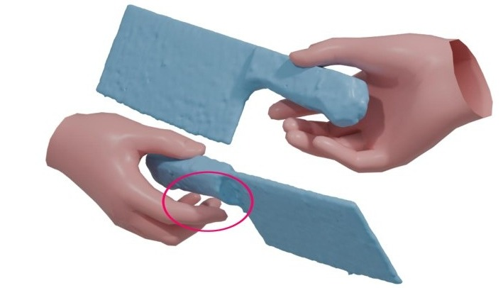
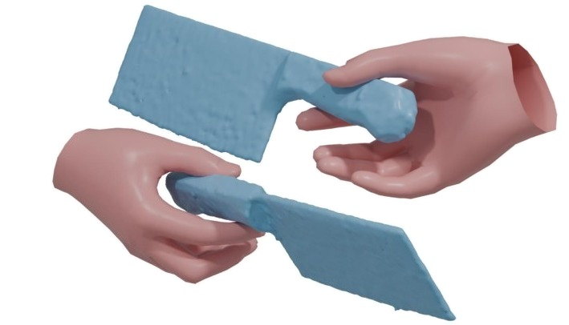
AlignSDF + HaNDF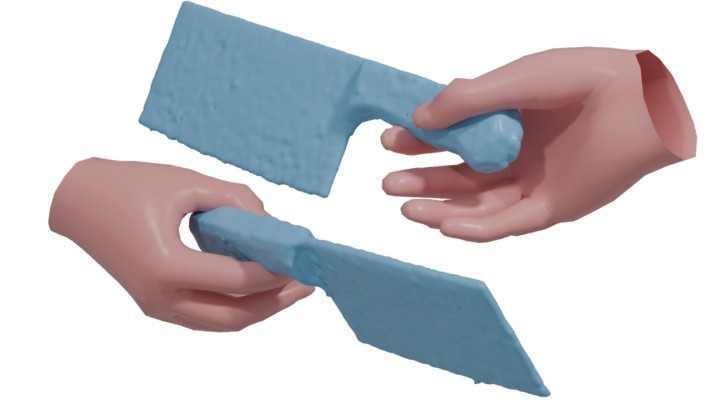
Ground truth
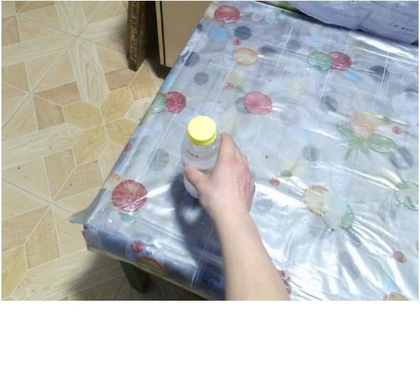
Input
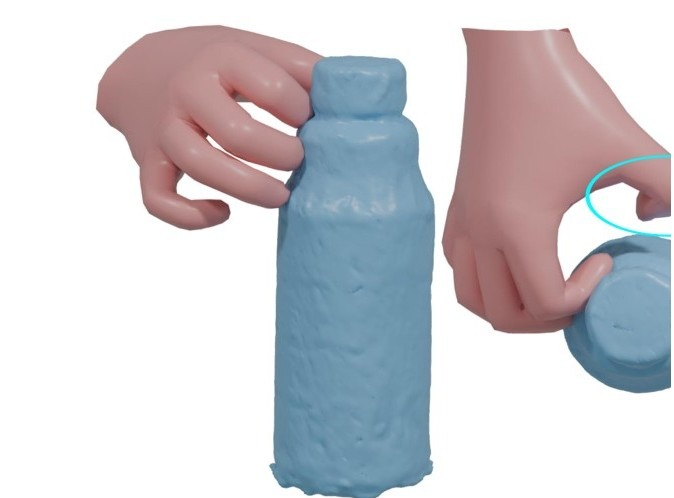
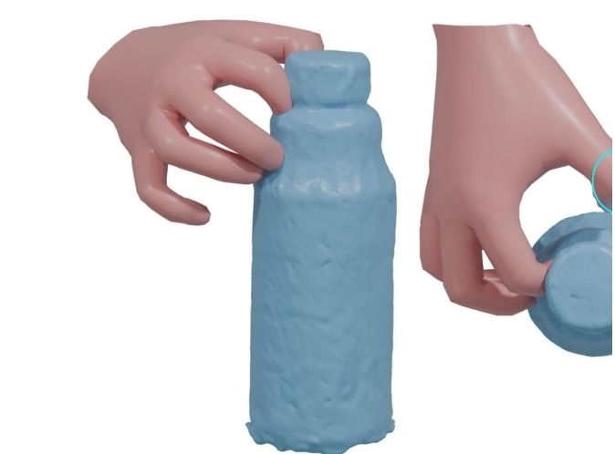
EasyHOI + HaNDF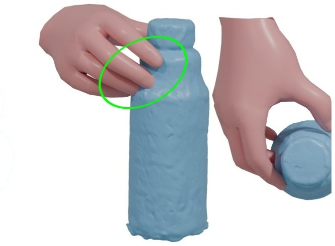
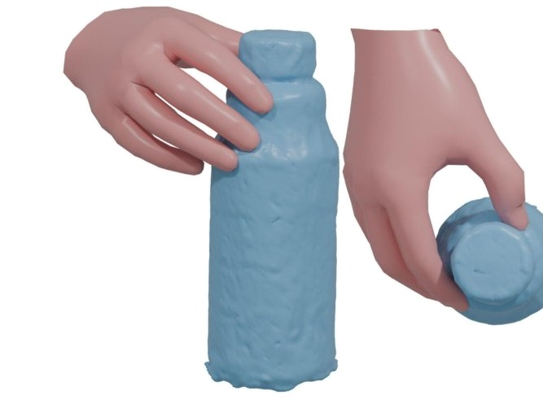
AlignSDF + HaNDF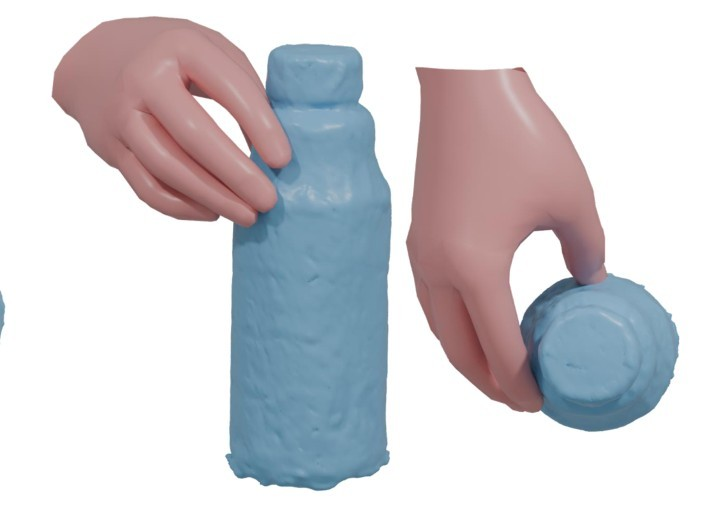
Ground truth
We thank the authors of the following works for providing their valuable code and data:
@inproceedings{liu2026handf,
title = {{HaNDF}: Object-Conditioned Geometric Neural Hand Distance Fields},
author = {Liu, Zuhao and Darcan, Melih and Yu, Zhengdi and Guler, Riza Alp and Birdal, Tolga},
booktitle = {Advances in Neural Information Processing Systems (NeurIPS)},
year = {2026}
}